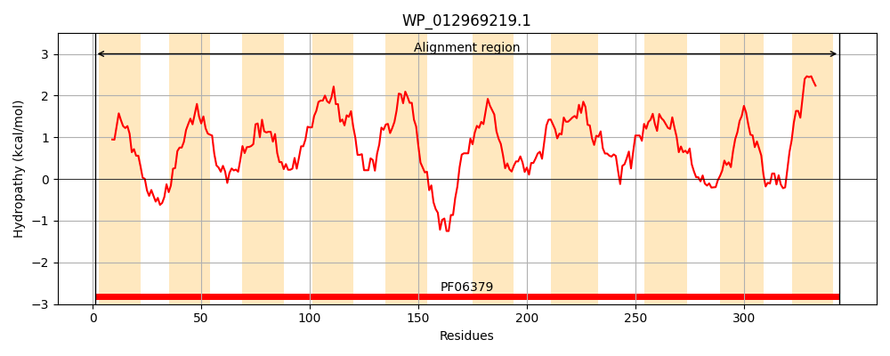
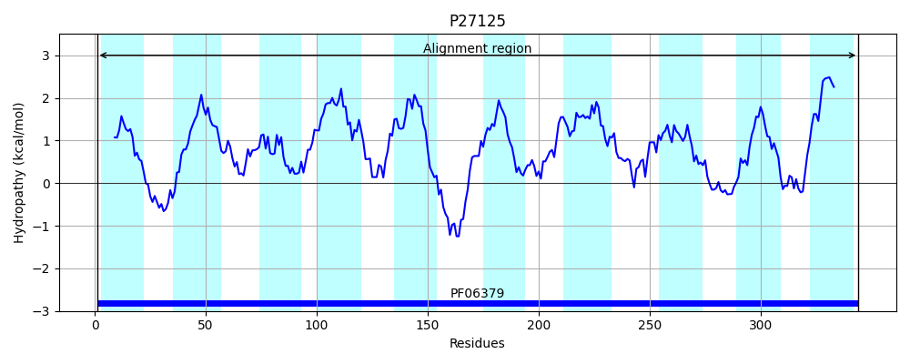
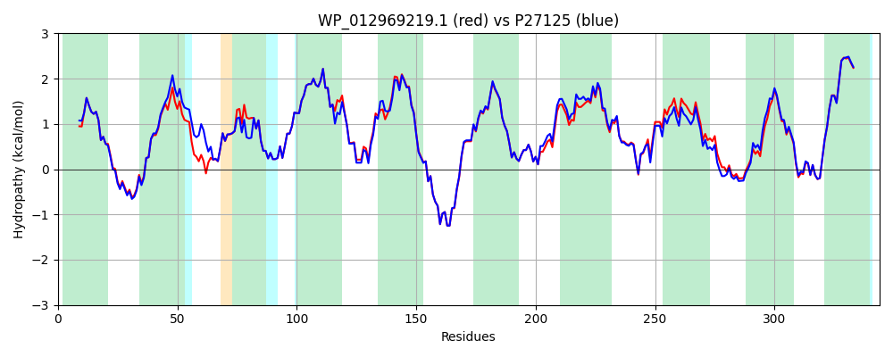

Hit Accession: P27125
Hit TCID: 2.A.7.6.1
Hit Description: gnl|BL_ORD_ID|9610 gnl|TC-DB|P27125|2.A.7.6.1 L-rhamnose-proton symport (L-rhamnose-H+ transport protein) - Escherichia coli.
Mach Len: 344
e:0.000000
Query TMS Count : 10
Hit TMS Count: 10
TMS-Overlap Score: 10.000000
Predicted Substrates:CHEBI:5584;hydron, CHEBI:45460;alpha-L-rhamnopyranose
BLAST Alignment:
Score: 1644 , Bit scores: 637 bits, E-value: 0.0e+00, Alignment length: 344, Percentage identity: 90
Query: 1 MNHAITMGIFWHLIGAASAACFYAPFKKVKHWSWETMWSVGGIVSWLILPWAISATLLPDFWAYYRSFNASTLLPVFLFGAMWGIGNINYGLTMRYLGMSMGIGIAIGITLIVGTLMTPIINGQFAVLMHTQGGQMTLLGVLVAVIGVGIVTRAGQLKERKMGIKAEEFNLKKGLLLAVMCGIFSAGMSFAMNAAKPMHDAAAALGVDPLYAALPSYVVIMGGGALVNLGFCFIRLAKVKNLSVKADFSLAKPLIISNLLLSALGGLMWYLQFFFYAWGHASIPAQYDYMSWMLHMSFYVLCGGLVGLVLKEWNNAGRRPVSVLSLGCVVIIIAANIVGLGMAS 344
M++AITMGIFWHLIGAASAACFYAPFKKVK WSWETMWSVGGIVSW+ILPWAISA LLP+FWAYY SF+ ST LPVFLFGAMWGIGNINYGLTMRYLGMSMGIGIAIGITLIVGTLMTPIING F VL+ T+GG+MTLLGVLVA+IGVGIVTRAGQLKERKMGIKAEEFNLKKGL+LAVMCGIFSAGMSFAMNAAKPMH+AAAALGVDPLY ALPSYVVIMGGGA++NLGFCFIRLAKVK+LS+KADFSLAK LII N+LLS LGGLMWYLQFFFYAWGHA IPAQYDY+SWMLHMSFYVLCGG+VGLVLKEWNNAGRRPV+VLSLGCVVII+AANIVG+GMA+
Sbjct: 1 MSNAITMGIFWHLIGAASAACFYAPFKKVKKWSWETMWSVGGIVSWIILPWAISALLLPNFWAYYSSFSLSTRLPVFLFGAMWGIGNINYGLTMRYLGMSMGIGIAIGITLIVGTLMTPIINGNFDVLISTEGGRMTLLGVLVALIGVGIVTRAGQLKERKMGIKAEEFNLKKGLVLAVMCGIFSAGMSFAMNAAKPMHEAAAALGVDPLYVALPSYVVIMGGGAIINLGFCFIRLAKVKDLSLKADFSLAKSLIIHNVLLSTLGGLMWYLQFFFYAWGHARIPAQYDYISWMLHMSFYVLCGGIVGLVLKEWNNAGRRPVTVLSLGCVVIIVAANIVGIGMAN 344 | Protein Hydropathy Plots: |
|---|
|  |  |
Pairwise Alignment-Hydropathy Plot:
|
|---|
|  |